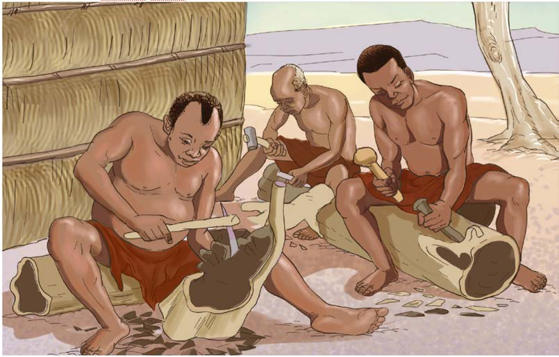

mkubwa katika kubaini miti iliyofaa kwa uchongaji na kutengeneza chombo kilichokusudiwa. Kwa mfano, miti iliyotumika kutengenezea mitumbwi na ngalawa ilikuwa mikubwa na yenye sifa ya kutokunyonya maji. Miti iliyotumika kutengenezea vyombo kama sahani, bakuli, miko na upawa ilitakiwa isiwe michungu na yenye sumu. Zana zilizotumika kwa uchongaji zilitofautiana kulingana na chombo kilichokusudiwa kutengenezwa. Mfano, zana zilizotumika kutengenezea vifaa vya nyumbani, vinyago na mapambo hazikuwa sawa na zilizotumika kutengenezea mitumbwi na ngalawa. Kielelezo namba 23, kinawasilisha shughuli za uchongaji.

Baadhi ya jamii zilikuwa na sayansi na teknolojia ya kutengeneza mashine mbalimbali. Mfano, jamii za Wahaya zilitengeneza mashine za kusaga na kukoboa nafaka. Mashine zilitengenezwa kwa kuchonga gogo kubwa na ndani yake viliwekwa vyuma laini vilivyopishana ili kuwezesha kusaga kitu. Mashine hizi zilitumika kusaga na kukoboa nafaka.